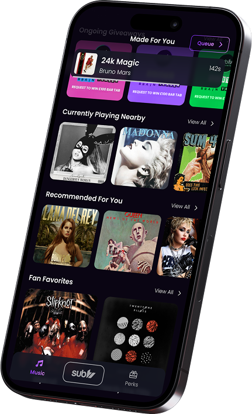
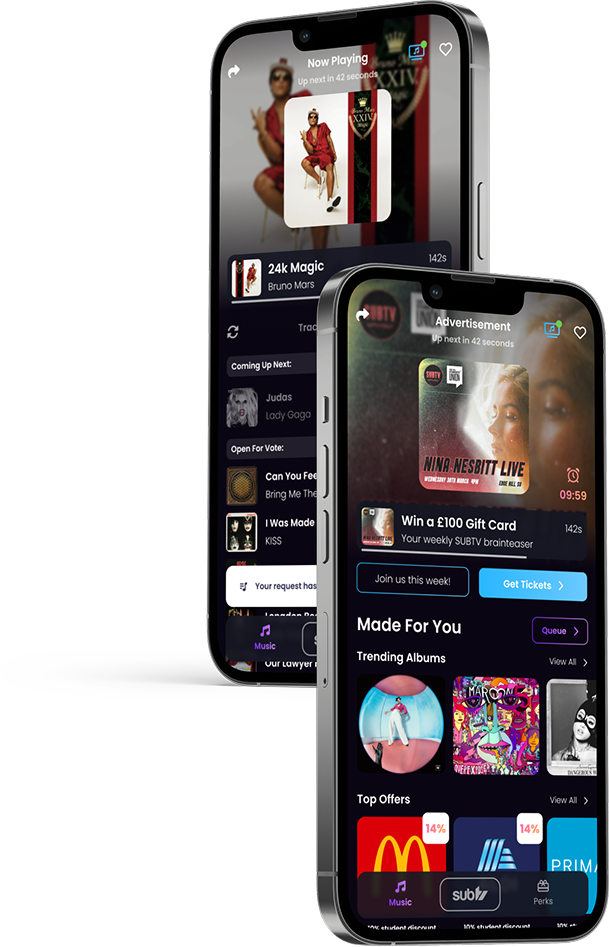

Your campus.
Your soundtrack.
Connect to SUBTV screens, request the tracks you want, upvote the queue and discover new music with the people around you.

Music becomes
participation
The app turns passive screens into a shared, interactive experience built for bars, cafés and student social spaces.
Search and request
Find the track or video you want to hear next.
Upvote the queue
Students influence the order together in real time.
Save favourites
Keep tracks, playlists and discoveries close at hand.
See what’s happening in your venue.
Connect the app to your campus location and request directly into the SUBTV schedule.

Discovery shaped by taste and place.
Personal recommendations meet the shared energy of the campus crowd.

A complete student
entertainment layer
24/7 schedule
Curated music videos built for 18–24 audiences.
Live sport
Major events create high-attention shared moments.
Competitions
Artist, festival and brand activations in the app.
Perks
Everyday savings give students another reason to return.
Turn discovery
into fandom
Music videos still make people lean in
SUBTV connects new releases to requests, votes, in-app messaging, competitions and live campus experiences.
